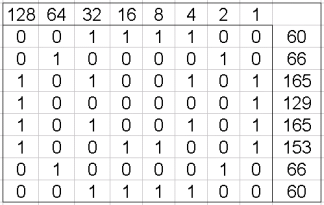

het systeem dat we normaal gebruiken heet het decimalen stelsel, maar computer gebruikt het binaire stelsel. bij decimaal zeggen als we iets van 216 zeggen 6 x 10⁰ + 1 x 10¹ + 2 x 10². bij een binaire stelsen heb je dat die tienen in de machten tweeën zijn. dus dan zeg je bij 216 1 x 2⁷ + 1 x 2⁶ + 0 x 2⁵ + 1 x 2⁴ + 0 x 2³ + 1 x 2² + 1 x 2¹ + 0 x 2⁰. dat schrijf dan als 11010110. bij optellen doe je het zelfde. als je 0111 hebt en 1001 bij elkaar wordt 1000 want als je 1 + 1 doet krijg je 10 en als je 0 + 0 doet krijg je 0 en als je 1 + 0 of 0 + 1 doet krijg je 1. je hebt meerdere stelsels zoals binair en decimaal zoal seximaal, maar we gebruiken alleen decimaal en binair.
om te oefenen met decimaal omreken naar binair kan je de website waarvan de link hier onder staat gebruiken
hieronder heb je nog een link naar een uitleg video hoe je moet omrekenen
